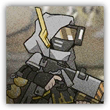
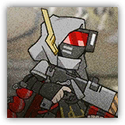

 |
深池部队远程作战单位。其改装弩能在连续射击后打出一发爆破弹。 |
| AC 14 | 先攻 +2（12） |
| HP 44（8d8+8） | |
| 速度 30尺 | |
| 调整 | 豁免 | 调整 | 豁免 | 调整 | 豁免 | ||||||||
|---|---|---|---|---|---|---|---|---|---|---|---|---|---|
| 力量 | 12 | +1 | +1 | 敏捷 | 16 | +3 | +5 | 体质 | 12 | +1 | +1 | ||
| 智力 | 10 | +0 | +0 | 感知 | 11 | +0 | +0 | 魅力 | 10 | +0 | +0 |
| 技能 察觉+2 |
| 感官 被动察觉12 |
| 语言 通用语，维多利亚语，塔拉语 |
| CR 2（XP 450；PB +2） |
 |
深池远程作战小队队长。使用的武器改装自维多利亚军方的制式弩箭，加装了能够使用爆炸弹药的发射器，弹药威力更大。 |
| AC 15 | 先攻 +2（12） |
| HP 77（14d8+14） | |
| 速度 30尺 | |
| 调整 | 豁免 | 调整 | 豁免 | 调整 | 豁免 | ||||||||
|---|---|---|---|---|---|---|---|---|---|---|---|---|---|
| 力量 | 13 | +1 | +1 | 敏捷 | 18 | +4 | +6 | 体质 | 12 | +1 | +1 | ||
| 智力 | 10 | +0 | +0 | 感知 | 12 | +1 | +1 | 魅力 | 11 | +0 | +0 |
| 技能 察觉+3 |
| 感官 被动察觉13 |
| 语言 通用语，维多利亚语，塔拉语 |
| CR 4（XP 1,100；PB +2） |